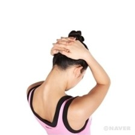
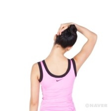

오래 앉아 있거나 장시간 사무 작업을 하는 경우, 앉은 자세를 유지하기 위한 근육(예를 들면 척추기립근)이나 팔, 어깨 근육에 피로가 쌓이게 된다. 피로의 누적은 자세의 변화와 근육통을 동반하는 근골격계 질환을 유발하기 때문에 매일 시간이 날 때마다 스트레칭을 통하여 근육의 피로를 풀어주는 것이 좋다. 특히 의자에 앉은 채로 스트레칭을 실시하는 동작들은 별도의 공간이 필요하지 않으며, 많은 시간을 투자하지 않고서도 운동효과를 얻을 수 있다.
1. 허리를 펴고 앉거나 선 자세를 취한 후 양손을 깍지 끼고 정수리 아래 뒤통수에 댄다.
2. 목 뒷덜미의 근육에 신전감(늘여서 펴지는 느낌)이 느껴지도록 양손을 아래쪽으로 눌러 턱이 가슴에 닿게 한다.
1. 허리를 펴고 앉거나 선 자세를 취한다.오른손을 머리 위로 가로질러 왼쪽 뒤통수의 귀 뒤쪽에 걸도록 한다.
2. 오른손에 힘을 주어 머리를 약 45°각도로 당기도록 한다.